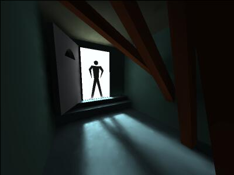
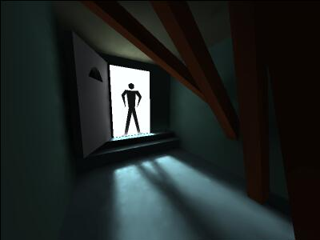
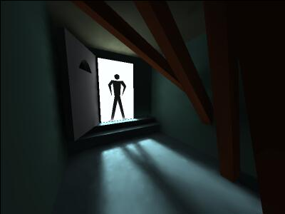

20.8.2000
Na Fiasku 2000 jsme soutěžili
s demem
Realtime radiosity 2: no mfx (DOS/Windows/Linux, celkem 2.5MB).
Následují ukázky, obrázky odkazují na mpegy, každý má kolem 2.5MB:

7.5.2000 Vyvíjený engine poprvé použit v praxi - k předpočítání statického osvětlení v ReDoxově demu Pinokijo na demoparty Avalcon 2000. Pinokijo ve verzi pro DOS a rozšíření pro Windows a Linux jsou ke stažení na movsd.scene.cz.
kolem 22.3.2000
Černobílá galerie (generoval ReDox na K5/133+32MB RAM,
každá scéna se počítala kolem 150 vteřin):
bodaky,
brana,
mview,
schody,
zarivka.
22.3.2000
Tatáž statická scéna s interpolací a použitím clusterů.
Z obrázků vedou odkazy na tytéž ve vyšším rozlišení.
Čísla ve snímcích udávají (počet paprsků vystřelených od začátku výpočtu)
a počet paprsků použitých pro výpočet současného osvětlení,
rozdíl je režie průběžného zlepšování.
0.1 vteřiny na Cyrix MII PR333
 10 vteřin
10 vteřin
24.1.2000
Další statické scéna.
Nyní už jde skutečně o globální osvětlení zahrnující všechny odrazy.
Obraz se průběžně zlepšuje během případného procházení scénou, snímky byly
pořízeny po uvedených časech od spuštění výpočtu.
0.1 vteřiny na Cyrix MII PR333
 1 vteřina
1 vteřina
10 vteřin
 100 vteřin
100 vteřin
20.12.1999
Scéna má 42 trojúhelníků.
Na následujících obrázcích je pouze primární osvětlení
podtrojúhelníků jedním z trojúhelníků, který sám není vidět,
protože je mírně odvrácený od kamery.
1000 paprsků, 0.1 vteřiny na Cyrix MII PR333
 10000 paprsků, 1 vteřina
10000 paprsků, 1 vteřina
100000 paprsků, 10 vteřin
{kind=link}
{kind=link}
{kind=link}
{kind=link}
{kind=link}
{kind=link}
{kind=link}
{kind=link}